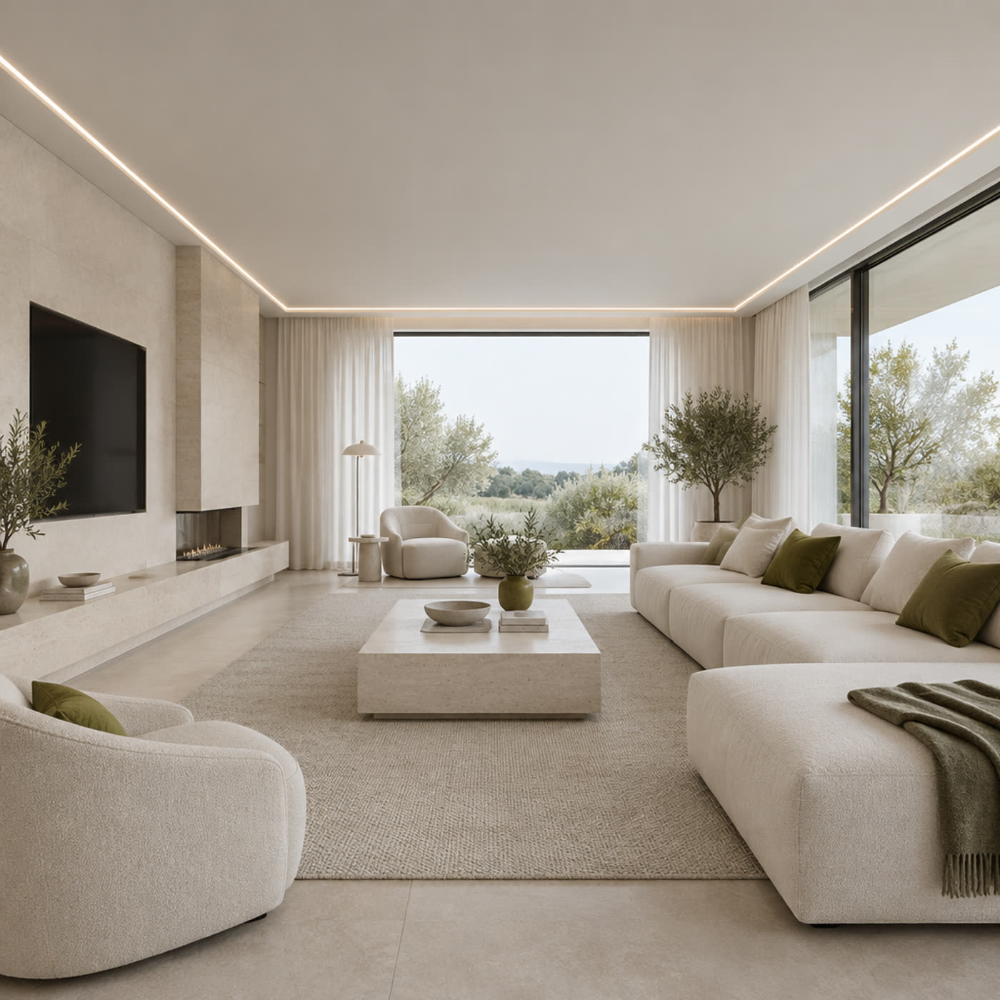

Натяжные потолки без пыли после монтажа
Любая сложность: ровные, двухуровневые, со световыми линиями. Работаем с пылесборником и защитой мебели, помогаем выбрать полотно под комнату и свет — чтобы через год не хотелось переделать.

Пылесборник в работе — пыль не уходит в квартируПосмотрите, откуда возьмётся шов
Полотно выпускают рулоном: если комната шире рулона, без стыка не обойтись. Покажите свою комнату — увидите, где пройдёт шов и как его спрятать.
Ваша комната
От замера до включённого света
Никаких «приедем и на месте разберёмся»: сначала смотрим комнату и слушаем, что вы хотите видеть на потолке.
Замер и выбор полотна
Смотрим комнату, освещение и мебель. Привозим образцы: матовое, глянец, сатин, световые линии — выбираете не по картинке, а руками.
Подготовка: защита и пылесборник
Укрываем мебель плёнкой, работаем с пылесборником — пыль от сверления уходит в него, а не оседает на шкафах и шторах.
Профиль и полотно
Ставим профиль по периметру, натягиваем полотно, выводим углы. Швы раскладываем так, чтобы их не было видно от входа и от окна.
Свет и проверка
Ставим светильники, люстру или световую линию, проверяем каждую точку и убираем за собой.
Чем отличаются — без «все хорошие»
Одна и та же комната с разным полотном выглядит по-разному. Сравните по тому, что реально влияет на жизнь: свет, швы, уход.
| Полотно | Как выглядит | Свет | Швы | Куда |
|---|---|---|---|---|
| Матовое | Ровная поверхность, как хорошо покрашенный потолок | Мягко рассеивает, без бликов | Самые незаметные | Спальня, гостиная, детская |
| Глянец | Отражает комнату, визуально поднимает высоту | Даёт блики от окон и ламп | Заметны сильнее — раскладываем от окна | Небольшие и невысокие комнаты, кухня |
| Сатин | Мягкий перламутровый отблеск между матовым и глянцем | Деликатный, без резкого отражения | Почти не видны | Гостиная, прихожая, кабинет |
| Световые линии | Полотно с профилем, по которому идёт ровный свет | Сам светится по линии, заливает комнату | Скрыты в линии света | Гостиная, кухня, спальня с подсветкой |
Пыль после монтажа — не мелочь
Самая частая жалоба на натяжные потолки — не потолок, а уборка после него. Поэтому мы работаем с пылесборником у сверла и укрываем мебель до начала работ.
- 1Пылесборник у сверла. Пыль от отверстий под профиль и светильники сразу уходит в сборник, а не летит по комнате.
- 2Мебель под плёнкой. Шкафы, техника и текстиль укрываются до того, как мастер достанет инструмент.
- 3Уборка входит в работу. После монтажа вы не ищете пылесос — забираем мусор с собой.
Так проходит каждый монтаж: и в квартире, и в доме, и в офисе.
Что спрашивают до заказа
Если вашего вопроса нет — наберите: ответим до выезда, без «приедем и посмотрим».
Сколько стоит?
Цена зависит от площади, формы комнаты и полотна: одно дело ровный прямоугольник, другое — комната с нишей и световой линией. Стоимость называем после замера, до начала работ, и не меняем её в процессе.
Сколько времени занимает монтаж?
Одна комната обычно занимает несколько часов. Точное время скажем на замере — оно зависит от количества светильников и сложности формы.
Нужно ли что-то готовить к приезду мастера?
Достаточно освободить подход к стенам и убрать хрупкие вещи с полок. Мебель и технику укрываем сами.
Будет ли видно шов?
Полотно выпускают рулоном, поэтому в широких комнатах стык технически возможен. Мы раскладываем его по короткой стороне и от окна: на матовом и сатине шов почти не читается. В интерактиве выше можно посмотреть, где он пройдёт именно в вашей комнате.
Можно ли поставить потолок со светильниками и люстрой?
Да, ставим точечные светильники, люстры и световые линии. Раскладку света обсуждаем на замере, чтобы потом не переделывать отверстия.
Работаете за пределами Волковыска?
Волковыск и Гродненская область. По дальним адресам уточняйте по телефону — скажем сразу, выезжаем или нет.
Покажете комнату — скажем цену и где пройдёт шов
+375 (33) 387-99-82Позвоните или пришлите фото комнаты: подскажем полотно, посчитаем и предложим время замера.